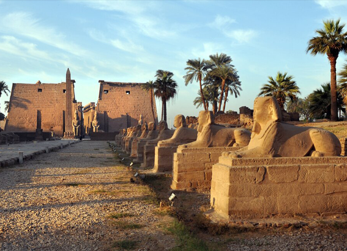

NATIONAL GEOGRAPHIC
A storyteller on a global trek maps his walk through a city agonized by a military coup
HISTORY & CULTURE
Perhaps at the makeshift shrines of its dead. Take, for example, the ephemeral memorial of Khant Nyar Hein.
Khant Nyar Hein was a 17-year-old pro-democracy protester and medical student who was shot to death last month by police in his middle-class Yangon neighborhood called Tamwe. The boy’s friends recently scurried from cover to drop bouquets on the asphalt road where he fell. Heavily armed security forces glared over the wall of a nearby police station. A few paces away from the blood stain, a tea shop worker served eggs and noodles for breakfast.
“I don’t know for how much longer we will stay open,” she said in the whispery monotone of a sleepwalker. “This violence will go on to the end. Not just here everywhere, cities, villages.” Then, with reflexive Burmese grace and hospitality, she poured more tea.
I am walking across the world for storytelling project called the Out of Eden Walk.
Occasionally, using GPS technology, I plot cultural and historical walking tours through the major cities along my journey’s continent-spanning trail. Jeddah, Saudi Arabia. Tbilisi, Georgia. Kolkata, India, and other urban centers have all been paced off to reveal the charms of humankind’s kaleidoscopic markets, parks, and alleyway eateries. But when I arrived at Yangon to prepare the logistics for my slow, multiyear journey onward into Asia, I inadvertently stepped into a world of bewildering anguish.
More than 700 citizens have been killed by the generals who seized power in a coup in Myanmar on February 1. Claiming that an election last year which their party lost badly was rigged, the military has detained the country’s civilian leader, Nobel laureate Aung San Suu Kyi, and imprisoned nearly 3,300 other opposition figures, democracy activists, artists, and journalists. Lately, the junta has taken to televising the beaten faces of protesters in its custody. Some experts say Southeast Asia’s poorest country may be sliding inexorably toward failed state status.
Under such heart-cracking circumstances, it seemed indecent to follow through on my project’s urban walking tours. But last month, I decided that walking the world should include both the desolating as well as the beautiful. And so, accompanied by two Burmese colleagues who can't be identified at this time for safety reasons, I trekked 10 miles through embattled Yangon, recording what I encountered at boot level in the metropolis of seven million.
Protesters, most young and idealistic, guarded improvised roadblocks constructed of garbage bins and adorned with hygiene pads. (Burmese folk tradition holds that men lose their masculine power if they come into close proximity with feminine products; protesters have weaponized such superstitions against police and soldiers.) Idled taxi drivers commiserated glumly beside medieval-looking battlements that bristled with sharpened bamboo punji sticks. Buddhist shopkeepers sinking into economic ruin fed birds on the empty sidewalks, hoping to accrue spiritual merit. Most of the streets were ghostly. The raucous protest marches that had shaken Yangon in the immediate aftermath of the coup were long suppressed.
“We are suffering because the people are suffering,” said a saffron-robed monk slumped under tree. He flinched as police flash-bang grenades exploded nearby.
For all its waypoints of fear, anger, innocence, bitterness, and pain, Yangon seemed a city paralyzed with waiting. Nobody knew what was going to happen next. I roamed abandoned streets that had been painted by protesters with colossal letters spelling out WE WANT DEMOCRACY. Like Yangon’s largely shut-in residents, I had no idea what lay around the next corner.
Comments :
- john Very good
- john Very good
Leave a Reply
Your email address will not be published. Required fields are marked*
Related posts:
-
 Revisit the Battlefield That Shaped America
Revisit the Battlefield That Shaped America"The Civil War was the most important event in American history, the crossroads of our being,” says documentary filmmaker Ken Burns, whose 1990 The Civil War won 40 major television and film honors
View article -
New reasons to visit Egypt now
The largest archaeological museum in the world, the Grand Egyptian Museum ( GEM), is due to open later this year (or early in 2023) outside Cairo. This dazzling showplace near the pyramids of Giza cost more
View article -
 5 adrenaline-pumping adventures in 2023
5 adrenaline-pumping adventures in 2023Wondering where to go next? You’re not the only one. After a frenetic return to travel, many are asking how to enjoy the rush of discovery without the crush of crowds. Our annual list of 25 inspiring
View article